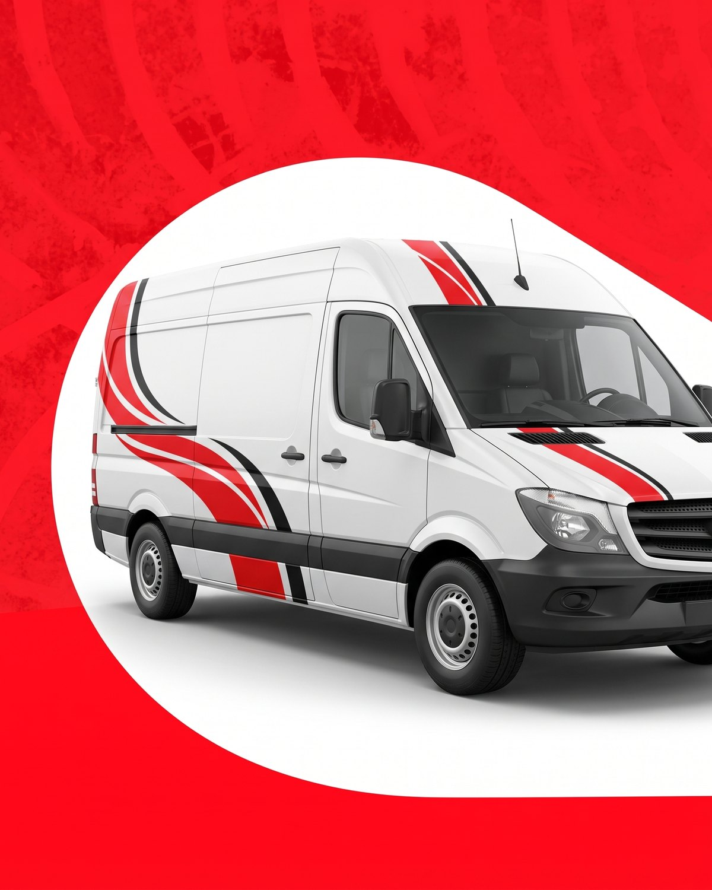
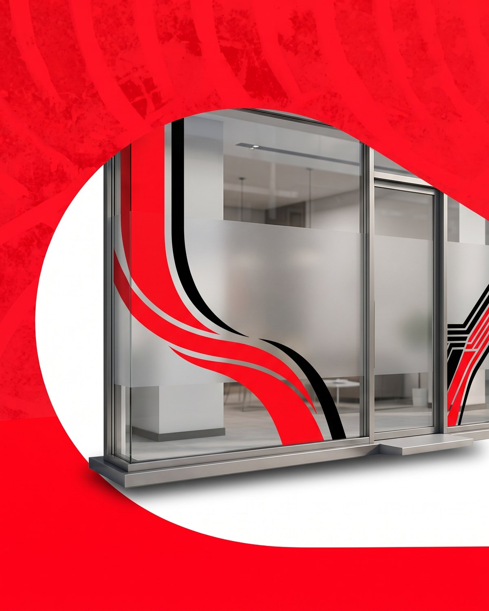

Inicio / Ploteo vehicular y comercial
Ploteamos autos, flotas y locales en José C. Paz. Vinilos de primeras marcas, terminación profesional y un resultado que se nota desde la primera mirada.
Cambiá la cara de tu auto sin pasar por chapa y pintura. Cambio de color total o parcial, techo en negro, detalles en espejos y molduras, o vinilo transparente para proteger la pintura de fábrica.
Tu logo y tu identidad en cada vehículo de trabajo. Ploteamos camionetas, utilitarios y furgones para que toda la flota se vea igual y tu empresa se reconozca en la calle.

Vidrieras, cartelería y vinilos para tu local. Esmerilados para dar privacidad sin perder luz, gráfica de fachada y promociones de temporada que se cambian sin dejar marca.

Elegí el acabado que va con vos: mate, satinado, brillante o texturas como fibra de carbono. El wrapping es reversible: cuando quieras volver al color original, se retira sin dañar la pintura.
Con vinilos de primeras marcas y buena colocación, entre 3 y 5 años según el uso, la exposición al sol y cómo lo cuides. Te explicamos cómo lavarlo para que dure más.
Sí. El vinilo se retira con calor y sin dejar residuos. Lo hacemos en el taller para que la pintura quede como estaba.
No. Al contrario: el vinilo protege la pintura original de rayones, piedras y sol. Cuando se retira correctamente, la deja intacta.
Un cambio de color completo lleva entre 3 y 5 días. Los detalles, techos o gráficas de flota se resuelven en el día o al día siguiente. Te confirmamos el plazo con el presupuesto.
Contanos qué tenés en mente y te pasamos opciones y precios por WhatsApp.
Pedir turno por WhatsApp